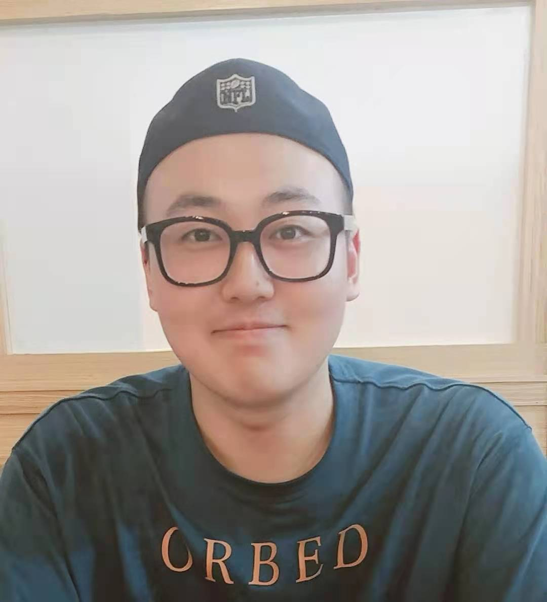

Zhenyu Zhang's Homepage
|  | Dr. Zhenyu Zhang Associate Professor Nanjing University (Suzhou Campus) 1520 Taihu Road, Suzhou, P.R. China Email: zhangjesse(at)foxmail.com |
Looking for self-motivated graduate students (both Ph.D. and master) working with me. For the prospective students, please send me your resume.
Opening positions: 正在招收2026年秋季入学博士，硕士。名额充足，欢迎有3D视觉/生成式AI基础，或对相关方向感兴趣，有一定论文成果发表经历（CCF-A为佳），致力于做出有影响力工作的同学尽早联系我。课题组也同时招聘RA（研究助理）2名，访问学生多名，方向为空间智能与数字人，有充足经费与计算资源，全力支持成果发表。有希望合作研究的同学也欢迎与我联系，谢谢！
Biography
I am currently an associate professor at school of Intelligent Science and Technology, Nanjing University, Suzhou campus, where I work on computer vision, computer graphics and machine learning. I got my Ph.D degree from Department of Computer Science and Engineering, Nanjing University of Science and Technology in 2020, supervised by Jian Yang. In 2019, I spent 10 wonderful months as a visiting student at MHUG group in Unviversity of Trento, Italy, supervised by Nicu Sebe. During 2020-2023, I worked as a staff research scientist at Tencent Youtu Lab.
My research interests include 3D modeling, rendering, frontier generative AI research / applications based on advanced large vision and language models. My long-term research objective is to create an interacitve world simulator from real-world knowledge and human prior. Specifically, I work on
3D digital human
3D Content Generation
Spatial Intelligence
News
07/2025 – 1 paper has been accepted by TPAMI.
06/2025 – 3 papers are accepted by ICCV'25.
04/2025 – I obtain Zijin Scholar of Nanjing University.
12/2024 – Our paper StrandHead for Hair-disentangled 3D potrait generation has been released. Here is the Link
10/2024 – I am invited by CCF (technical commitee on computer vision) to give a talk on the seminar "Human-centric Visual Perception". Here is the link
09/2024 – One paper is accepted by NeurIPS'24
09/2024 – Our paper ConsistentAvatar has been selected for oral representation in ACM'MM 24
08/2024 – Our paper Barbie for disentangled 3D avatar generation has been released. Here is the Link
07/2024 – One paper on temporal-consistent talking head generation is accepted by ACMMM'24.
06/2024 – Our paper TPVD is selected as an oral representation on CVPR 2024.
05/2024 – I am invited by CCF to give a talk on 3D Face Reconstruction and Generation. Links can be found at CCF official account of Wechat.
03/2024 – Our survey and benchmark on Deepfake Generation and Detection is now released, please see this page.
03/2024 – 1 paper TPVD on geometry-aware depth completion is accepted by CVPR'24.
12/2023 – 1 paper AltNeRF on robust 3D scene reconstruction is accepted by AAAI'24.
08/2023 – I obtain a general program from National Natural Science Foundation of China (NSFC). The program is on digitual human generation.
03/2023 – 1 paper NPF on 3D face modeling is accepted by CVPR'23
09/2022 – 1 paper DesNet on depth completion is accepted by AAAI'23
07/2022 – 2 papers (RigNet and M^3PT ) on depth completion are accepted by ECCV'22
03/2022 – 2 papers on face reconstruction and neural rendering are accepted by CVPR'22, with the acceptance rate to be 25.3%
03/2022 – I obtain 2021 AI Evangelist of Tencent Youtu Lab
01/2022 – I obtain nomination award of CCF (China Computer Federation) Outstanding Doctoral Thesis. See this page (in Chinese)
07/2021 – 1 paper on nighttime depth estimation accepted by ICCV'21, with the acceptance rate to be 25.9%
07/2021 – Our ASFD on face detection is accepted by ACM MM'21
03/2021 – 1 paper on 3D face modeling accepted by CVPR'21 (Oral!), with the acceptance rate to be 23.7%
02/2020 – 2 papers accepted by CVPR'20, with the acceptance rate to be 22.1%
11/2019 – 1 paper accepted by AAAI'20, with the acceptance rate to be 20.6%
10/2019 – Our ECCV'18 extended paper is accepted by TPAMI!
04/2019 – Our paper on online depth adaptation is released at Arxiv
03/2019 – 1 paper accepted by CVPR'19
12/2018 – I join MHUG as a visiting student. Wonderful people and city!
06/2018 – 1 paper accepted by ECCV'18